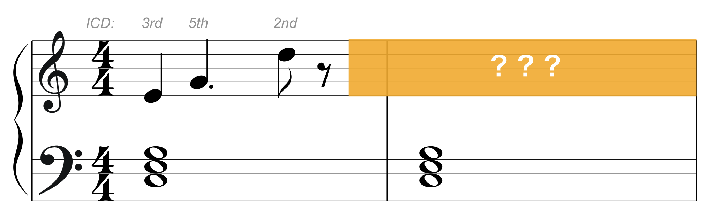

1. 以旋律为主体的理论模型
1. 以旋律为主体的理论模型
在旋律论第IV章中，我们将进一步充实并深化关于外壳音（）的理论体系。首先我们来厘清展开本章所必需的核心前提。
第IV章的内容将比第II章更加深入细致，我们将深入学习带来浑浊感的偶数外壳音的驾驭方法。其中最关键的，并非死板的抽象理论，而是一个极为切实的实战问题：“当产生了无法容忍的刺耳浑浊时，该做出修正的究竟是和弦还是旋律？”

例如在 I 级和弦之上，“F”音会与和弦音“E”发生正面冲突，产生强烈的浑浊感。面对这一现象，在常规的流行音乐理论中往往会做出这样的解释：“在 I 级和弦上 F 音会带来浑浊，因此不能长时间延长”。此时的 F 音被视作应当回避的刺头，被称为避免音（Avoid Note）。

在这一理论模型中被放在最高优先级的，是捍卫和弦既有的优美鸣响。为了守护 C-E-G 的纯净和声，必须委屈 F 音退避三舍。而这一模型的底层基石正是即兴演奏（Ad-lib Session）。在爵士乐即兴合奏时，和弦进行是事先确立好的铁律，若有人擅自横冲直撞破坏和弦，就无法达成良好的乐队合奏。因此大家必须演奏尊重和弦属性的乐句线条——“避免音”正是出于这一实战视角构建的产物。
然而若将视线转移到流行音乐的“作曲”上，这种优先级逻辑就未必完全适用了。只要那条旋律线条足够动人抓耳，理应由和弦为旋律让路。创作出扣人心弦的伟大旋律才是流行音乐至高无上的正义；加之与即兴演奏不同，作曲完全可以通过个人意志或团队沟通从容推敲每一个音符，例如干脆把伴奏中的 E 音抽离，为 F 音开辟一条坦途，这在现实创作中是完全可行的。

取决于预设的场景，哪一种立场更可取也会随之改变。所幸自由派音乐理论将旋律论与和弦论彻底剥离开来，因此在旋律论中，我们将把绝对的优先级赋予旋律一方来展开理论构建。换言之，比起“即兴演奏”，我们更加偏重“作曲”的思维模型。
具体而言，当旋律与和弦发生冲突时，作为化解手段，除了“让旋律妥协解决”之外，我们还会介绍“将和弦替换为相似的其他和弦”等策略。如此一来，当遭遇“我明明极想保留这句旋律与这段和弦的氛围，却莫名显得粗糙浑浊”的困境时，你就能掌握无需更改核心旋律便能从容化解的高超手段。
和弦优先，还是旋律优先？在接下来的章节中，我们将明确区分为“和弦优先型”与“旋律优先型”来进行辨析。
2. 外壳音（Shell）的复习
穿插了第III章关于教会调式的探讨，想必大家已经隔了一段时间，让我们先简要温习第II章讲到的“外壳音”。
旋律相对于伴奏和弦处于第几度的位置是至关重要的。它直接决定了旋律倾性的强弱流向。基本上，1、3、5、7 度的“奇数度”是相对稳定的；反之 2、4、6 度的“偶数度”则浑浊度高，会带来强烈的不稳定感与张力[1]。

不仅是倾性，若旋律取三音（3rd）便会极度放大大小调的明暗色彩；若取根音（Rt）则会展现出直白刚劲的鸣响，对整体情绪塑造影响深远。 另一方面，这并不否定第I章阐述的“核心音（Kernel）”——即相对于调式中心的绝对位置所赋予的固有性格。这两者复合交织，最终决定了整首歌曲的情绪气象。在第II章中，我们将其概括为“双重位置信息”。

从调式中心数起的绝对音级位置称为“音阶度数（Scale Degree）”；而从和弦根音数起的相对音级位置则命名为“和弦内度数（In-Chord Degree, 简称 ICD）”。由后者赋予旋律的附加属性，便称为“外壳音（Shell）”。 顺便一提，“核心音（Kernel）”、“外壳音（Shell）”与“和弦内度数（ICD）”皆因传统乐理缺乏精准对应的现成术语，而由自由派理论独创命名。
在第II章中，我们仅止步于理解作为基石的“奇数度”的各自色彩；而在第IV章中，我们终于要全面攻坚剩余的 2、4、6 度了。
3. 偶数外壳音的解决
再次明确：2、4、6 度的音统称为偶数外壳音（Even Shell）。偶数壳音会在声音中制造摩擦浑浊，听者会自然而然地期待随之重返澄澈安宁。正如属功能和弦渴望向主和弦解决一样，偶数外壳音在原则上也强烈渴望得到解决[2]。 不过解决的途径多种多样，甚至特意将紧张悬而不决也是极佳的手法。因此如何妥善驾驭由此产生的浑浊，便成为了决定曲风情绪的核心胜负手。让我们首先从微观片段入手，展开细致观察。
这是一段类似主歌 A 段开头的旋律动机短句，但中途旋律戛然而止了。


观察旋律相对于和弦的位置（ICD）：旋律在落到 2nd 的位置时突然刹车停滞。由于 2nd 产生浑浊，此刻倾性骤增，正悬在空中寻找解决的归宿。让我们尝试用几种不同模式对其进行解决，对比其间的审美差异。
顺次下行解决
在此类模式中，最为基础规整的形态当属顺次下行（Stepwise downward）。

在第I章的核心音论中我们曾介绍过“音符重力”的普遍常理：若在向上与向下之间做选择，下行在物理听觉上永远是更符合自然重力法则的运动姿态。在壳音论中这一逻辑同样成立：对于 2、4、6 度壳音而言，下行级进皆被视作最基础纯正的解决路径。
动画《轻音少女》的剧中插曲《天使にふれたよ》是密集连击偶数壳音顺次下行解决的极佳范例。让我们审视副歌旋律：

用表情符号标注了紧张与解决的动态。纵览全谱，每一次无不细致周到地通过顺次下行完成解决。当旋律结构如此工整对称时，听者便能极为顺畅地感知旋律的呼吸脉络，听感无比温馨舒适。
顺次上行解决
在当前范例中，若顺次上行，便能直接到达极具安定感的三音（3rd），因此向上迈进同样能获得充分的释然解决感。

2、4、6 度壳音的浑浊，只要通过这种顺次级进进行来化解，传达给听者的艺术效果永远是最直观清晰的。
跳进上行解决
话虽如此，打破级进条框大胆施展跳进同样趣味横生。我们不妨试着越过三音，一口气向上大跳至五音（5th）：

这自然会带来极为嘹亮豪迈的力量感。比起 A 段主歌起步，这听起来更像是副歌的高潮收尾。由于最终浑浊得以消解，在广义上也属于“解决”的一种变体。
跳进下行解决
那么反过来，向下跳进至底层的七音（7th）又会发生什么呢？

这瞬间勾勒出了一幅极其多愁善感的惆怅容颜。这是情理之中的：落脚点的七音此刻对应着调式中的“导音”，即便在壳音上属于奇数度，在核心音上依然是强倾性音，将其称为彻底的“解决”未免勉强。但正是这种挥之不去的欲说还休，赋予了乐句摄人心魄的独特魅力。 因此，虽然扎实落地是基本功，但根据想要抒发的情愫打破常规，同样是完全成立的高阶手法。
跳进至其他偶数度数
更进一步，这次我们尝试跳向 6th：

在某些听者耳中，可能会觉得 2nd 的浑浊尚未处理妥当就贸然转移，听感略显别扭。仿佛突然跳跃到了一个完全没有上下文关联的奇异维度。然而在强烈渴求这种幽玄不可名状之神秘气氛的特殊情境下，刻意制造这种离奇展开完全可行。理论从来不是为了规定何为“正确”，而是丈量何为通俗惯例、何为先锋奇崛的标尺。
延留保持
绝不可遗忘的还有最后一种极具现代感的选择：音高完全不作改变，持续保持或连打延留。

在当前的旋律中，由于 D 音本身的倾性并不算极高，顺畅地营造出了一种极富魅力的空灵悬浮感。若换成倾性更强的音，强行长音延留的难度就会显著上升。
综上所述，除却最后的延留之外，我们拥有如下宽广的展开谱系：

粗略归纳便有 8 种路径之多，在实际创作中更有无尽的可能。级进解决固然是典范标杆，但立足于你想要传达的情绪画卷，任何道路皆可自如挥洒。
4. 内部解决与后续解决
然而到目前为止，我们所有的考察都局限在单个和弦内部完成和声解决，这属于极其狭隘的微观视角。在实际音乐中，旋律保持长音延留不动、跨入下一个和弦之后才展开解决是极为常见的绝妙手法。

这是一个极具代表性的高超范例。第II章我们谈过 4th 的摩擦浑浊是相当强烈的。在长音保持期间，旋律原本在 I 级上承担 2nd，在和弦切换至 VIm 的刹那直接质变为了 4th，构建起了一套张力层层加码蓄势的精妙结构。高度积蓄的情感张力跨越小节线后最终豁然开朗释放，构成了极富戏剧性的大师级铺展。
像这样，携带着偶数壳音的张力一往无前跨入下一小节并在那里完成解决的技法，在以往并未被赋予明确的专属命名。在自由派音乐理论中，我们将小节内完成解决的方式称为内部解决（Local Resolution），将跨越至后续小节完成解决的方式称为后续解决（Inherited Resolution）。通过赋予鲜明的概念命名，希望能帮助大家将这一精妙技法牢牢铭刻在创作工具箱中。
5. 解决的冲突（竞合）
刚才展示的是 I → VIm 这种清晰明快的范例，但根据和弦走势的不同，有时会碰撞出极其错综复杂的矛盾结构。

当和弦由 I 推进至 V 时：在旋律延留期间浑浊被悄然化解，本以为安全着陆，结果旋律却在 V 级上反客为主形成了 4th！这宛如表情包小人不知该哭还是该笑的窘境。像这样，水平维度的线条解决与垂直维度的和声解决发生激烈冲突，正如我们在第II章曾介绍过的那样。

正如当时所强调的：这绝非任何意义上的败笔或缺点。传统古典与爵士理论基于旋律与和声必须紧密协力的前提，往往不愿承认这种格局的合理性；但在现代流行音乐中，一切皆为艺术表现服务。“旋律堂堂正正平静释怀，而伴奏和声却在此刻骤然拔高激昂”，唯有在这种撕裂交锋的张力下，才能诞生震撼人心的万千气象。 我们将水平线条维度宣告解决、而垂直和声维度却张力攀升（或反之）的矛盾状态，正式命名为解决的冲突 / 竞合（Conflict）。
回望至此，大家想必已经深刻体会到：外壳音的殿堂浩瀚精深。单单在 I 级和弦上对待一个 2nd Shell 就有如此波澜壮阔的门道，更何况这仅仅是两个音的极简对位。在现实中，像“D - B - C”这种通过三个音迂回解决的手法数不胜数，其艺术可能性浩瀚无垠。 因此，比死记硬背更重要的是身体与感官的共鸣。不断磨砺听觉与双手，跨越冰冷的数字与乐谱，用耳朵直接洞察核心音与外壳音的鲜活质感，才是登堂入室的根本命脉。
总结
- 旋律相对于和弦处于 2、4、6 度位置时会产生音响浑浊，本能催生出渴望解决的倾性。
- 虽然顺次级进解决是典范基准，但在现实中存在着跳进、延留等极为丰富的处理途径。
- 跨越小节线在后续和弦中完成解决的技法，称为“后续解决（Inherited Resolution）”。
- 水平维度的旋律解决与垂直维度的和声张力发生矛盾背离的现象，称为“冲突（Conflict）”。这种冲突在现代流行音乐中是催生独特艺术张力的利刃。